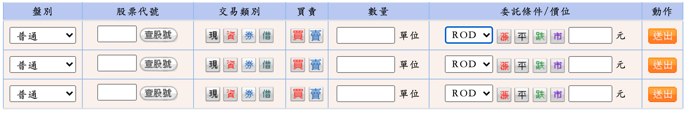

智慧理財
投資標的
投資標的匯總
市場分析
投資指標
投資建議
投資監控
投資管控匯總
網路作業說明
股市即時監控
財經資訊
理財資訊網
財經資訊
理財知識
股市操作手冊
股市作業說明
網路投資管道
元大金控
其他2
網路投資管道
元大金控
元大證劵
下單類別：
AP下單
WEB下單
語音下單
API下單
下單作業手冊  說明:
盤別：
普通交易：AM9:00~PM1:30
盤後交易：PM2:00~PM2:30
盤後零股交易：PM1:40~PM2:30
交易類別：
現-現股：現股就是付出100%的本金。
資-融資：你判斷股票會上漲，你想買股票做多，但是資金不夠時，可以用融資買進股票。( 融資期限通常為半年，可向券商申請延長到1.5年 ). 大部分都是券商會幫你付6成，你只需要準備4成就好。
劵-融劵：你判斷股票會下跌，你想做空股票時，可以用融券，跟券商借股票來先賣掉股票。( 融券期限通常為半年，可向券商申請延長到1.5年 )．融券需要付9成的保證金，所以一張100元的股票你必須付9萬元。接下來，就等待股票下跌後買回一張股票還給券商，並給利息(大多券商年利息0.1~0.3% )就好。
借：
委託期限：
ROD, Rest of Day:當日有效 - 送出委託之後，投資人只要不刪單，直到當日收盤前，這筆委託單都是有效的。
IOC, Immediate or Cancel:立即成交否則取消 - 掛出當下允許部分成交，其餘未成交之委託立即刪單，殘餘委託不會留存於委託簿，讓投資人在想要的價位內成交，而剩下的不留存，有需要再重下。
FOK, Fill or Kill:全部成交否則取消 - 指全數成交或取消，委託不會留存於委託簿，如果不想部分成交，可用這種方式委託。
限價模式：
漲-漲停：漲停價是平盤價+10%
平-平盤：今天它的平盤價，就是昨天的收盤價。
跌-跌停：跌停價是平盤價-10%
市-市價：
相關資訊
市場先生 2020/05/07:
逐筆交易意思與優缺點？市價單、限價單、ROD、IOC、FOK介紹
元大投信
其他2